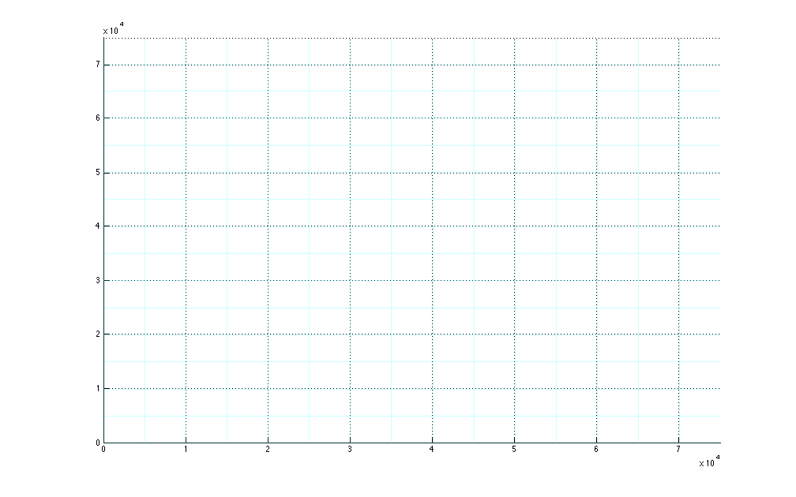
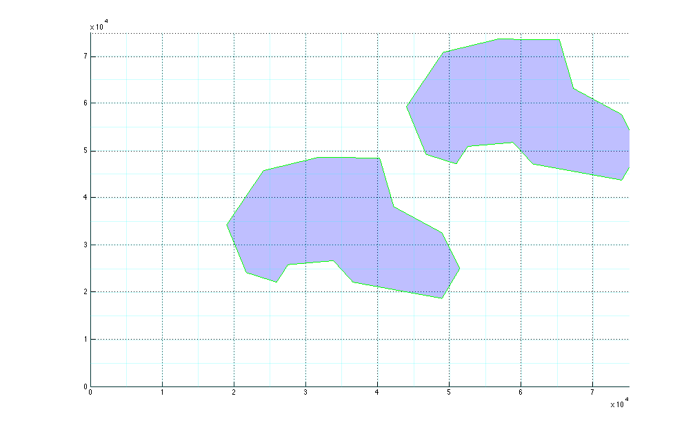
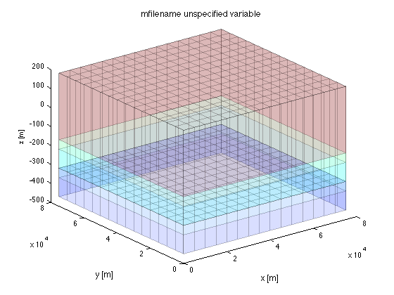
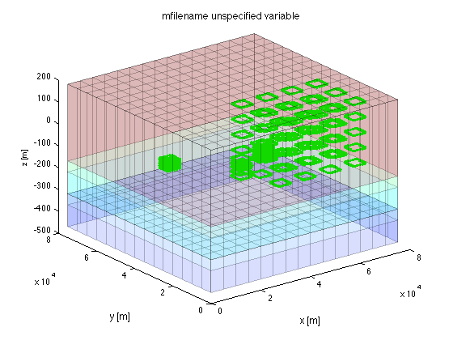

Contents
Ex2 Example 2 in USGS Modflow 2000 manual
Example 2 descrived in USGS Open-File Report 00-92
While ex1 uses the BCF pacakge, this ex2 example uses the LPF package, which is more gneral and modern. The BCF packages uses transmissivities and ignores vertical conductivity within aquifers. The LPF package uses horzontal and vertical conductivities in all cells. Therfore, things that change from ex1 to ex2 are: HY and TRAN are exchanged by HK VCONT is replaced by VKCB BCF package is off in NAM sheet of ex2.xls LPF package in on in NAM sheet of ex2.xls
Run mf_setup to generate modflow input files and run modflow. After modflow has finished run mf_analyze to visualize the results.
TO 090806 091129
clear variables; close all; % clean up global basename % global is requires in context with MODPATH basename='ex2'; % name of model and basename all its files
Geneate the grid
% All values are in feet as in the original example. xGr = 0:5000:75000; % xGrid coordinates, feet yGr = 0:5000:75000; % yGrid coordinates, feet zGr = [200 -150 -200 -300 -350 -450]; % elevations of tops and bottoms % Notice that the model has 3 (horizontal) aquifers (reprented by model cell layers) % and two aquitards (confining beds). This implies 6 z-plane elevations % have to be specified for this grid: LAYCBD = [1 1 0]; % Define which layes have a confining beds below gr = gridObj(xGr,yGr,zGr,LAYCBD); % generate gridObj, type gr to see its contents. gr.plotGrid; % show the grid
Aquitard and aquifer properties
The layers are homogeneous in this example. Only one value is needed for each property and layer
kh = [1e-3; 1e-4; 2e-4]; % one value for each layer kv = [1e-3; 1e-4; 2e-4]; % vertical layer conductivity por = [0.35; 0.35; 0.35]; % layer porosity vkcb = [1e-6; 5e-7]; % confining bed vertical conductivity porcb= [0.2 0.3]; % confining bed porosity
Model arrays 3D
IBOUND = gr.const(77); % Boundary array, >0 is which cells will be computed IBOUND(:,1,1:2) = -1; % Layer 1:2, left boundary will be fixed flows STRTHD = gr.const(0); % starting heads, all 0 POR = gr.const(por); % layer effective porosity PORCB = gr.const(porcb); % confining bed porosity HK = gr.const(kh); % hor. conductivity VK = gr.const(kv); % vertical conductivity VKCB = gr.const(vkcb); % confining bed vertical conductivity
Get stress period info from worksheet PER in ex2.xls
[PERnams,PERvals] = getPeriods(basename); % column headers and column data NPER = size(PERvals,1); % Total number of stress periods.
Set recharge
rech = 2.0e-8; % recharge in first stress period RECH= rech*ones(gr.Ny,gr.Nx,NPER); % expand over cells and times
Drains
% Specify drain basic info drn = [5000 37500 0 1/5000;... 50000 37500 100 1/5000]; % [x y Elev Leakance] assumeing layer 1 % Generate drain array as required by modflow. % Each line of the list has [iPer iz iy ix head Leakance] Default iPer=1 DRN = gr.bcnLine(basename,'DRN',drn, drn(:,4:end));
Get wells from worksheet 'PER'
well = wellObj(basename,'wells',gr,HK,'PER');
MODPATH
% Generate starting points for path lines or define there starting points % such that MODPATH will generate the actual points. % generate pond of class waterBodyObj using the worksheet 'waterbodies' to % get the overal properties of waterbodies, and the sheet 'waterbodies (2)' % to get the coordinates of their cirumference. % You can inspect the two obtainde ponds yourself. pond = waterBodyObj(basename,'waterbodies','waterbodies (2)',gr); % Generate a zoneArray in which the cells that are inside a waterBodyObj % get as their value the value of the nr property of the different % waterBodyObjs. %zoneArray = pond.ZONE(gr); % uses the pond.Nr as Id, includes all ponds in pond array zoneArray = well.ZONE(zeros(gr.size));
waterbody obwl nr(2) in mesh waterbody ddp nr(1) in mesh waterbody ddp nr(1) in mesh waterbody obwl nr(2) in mesh
Show these ponds on the already plotted grid.
pond.plot('edgecolor','g','facecolor','b','facealpha',0.25);
Specify the number and placement of the starting points with each cell. Each line defines the properties of a particle group for MODFLOW. The first item is a vector of zone Numbers to find the corresponding cells in the zoneArray. In this case the zone number is the pond number. The following arguments are variableName variableValue pairs, where variableName identifies a property of a mpath_particleGroupObj and variableValue its property. Unspecified properties fall back to preset default values. IFace is the plane of the cell where particles are to be placed as defined by MODPATH. Its argument may be a vector of IFaces, like [1 3 5 6] if particles are to be placed on more than one cell face. Use zero to indiate that particles will be distributed across the interior of the cells. Placement defines the number vertical and horizontal columns and rows where the particles are placed on the IFace. If IFace==0, then 3 values are required. If a vector of IFaces is used, the best procedure is to always use 3 placement values, meaning NLay,NRow,NCol, so that the correct number of subdivisions is selected corresponding to each of the IFaces including IFace==0. Arbitrary name.value pairs can be used to fill gaps, as the lines of the cell array zoneVals must be equally long for Matlab. (Note that any varNm not corresponding to a property of mpath_particleGroupObj is ignored, also if it is misspelled).
% empty zoneArray indicates that we specify a range of cells using % [minLay minRow minCol maxLay maxRow maxCol as first argument] in zoneVals %zoneVals = {[1 1 1 1 gr.Nrow gr.Ncol],'name','top','IFace',6,'placement',3,'lineSpec','r.'}; %zoneVals = {pond(1).nr,'name',pond(1).name,'IFace',5,'placement',1,'LineSpec','b.'; ... % pond(2).nr,'name',pond(2).name,'IFace',5,'placement',1,'LineSpec','r.'}; for iw=numel(well):-1:1 zoneVals{iw,1} = {zoneArray & well(iw).nr,'name',sprintf('well(%d)',well(iw).nr),'IFace',[1 2 3 4],'placement',5,'lineSpec','g.'}; end
Geerate the mpath_partileGroupObj from which MODPATH can generate the staring locations of the particles. As can be seen, the call needs the grid object gr, the zoneArray, which pertains to all mpath_particleGroupObjs generated and the zoneVals cell array defined above, which defines the properties specific for each of the mpath_partivleGroupObjs to be generated. Any following arguments must be in varNm,value pairs. The propery value pairs specify values for properties that are the same for all of the generated mpath_particleGroupObjs. These values may be overwritten by the property value pairs specified for the individual mpath_particleGroupObjs specified in zoneVals.
pGrp = mpath_particleGroupObj(gr,zoneVals);
Particles
The definition above will allow to generate input for MODPATH from which MODPATH can generate the required starting points. So mfLab does not need to do that. To allow plotting the particles within mfLab, they can also be generated by mfLab using the method getParticles. This methods addes the particles to the mpath_particleGroupObj
pGrp = pGrp.getParticles(gr);
after which they can be shown graphically
First show the mesh:
figure; hold on; view(3); xlabel('x [m]'); ylabel('y [m]'); zlabel('z [m]'); gr.plotMesh('faceAlpha',0.15);
Then plot the particles using the lineSpec pertaining to each group
pGrp.plot();
You can turn the graphic by hand to better view the particles
save underneath pond drn